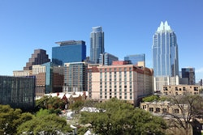
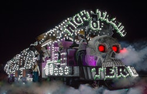

Eclectic and Electric 60s Rock Festival
Initially, some of the earliest rock festivals were built on the foundation of pre-existing jazz and blues festivals, but quickly evolved to reflect the rapidly changing musical tastes of the time. For example, the United Kingdom's National Jazz Festival was launched in Richmond from August 26–27, 1961.
August 31, 2018
Samsung Marketing Event Rocks SXSW
Samsung was founded by Lee Byung-chul in 1938 as a trading company. Over the next three decades, the group diversified into areas including food processing, textiles, insurance, securities, and retail.
March 23, 2019
Happening to Produce Five New Musical Showcases at Auditorium Shores in 2019
Auditorium Shores is an urban park located in downtown Austin, Texas, within the larger Town Lake Park. Its name refers to its location between the former Palmer Auditorium and the shores of Lady Bird Lake.
October 11, 2018
Check Out Our Updated Marketing Capabilities Deck
Some of the world's strongest brands were originally built through low-cost community-based marketing. Nike Inc., Starbucks and Google are some examples. When companies focus on meeting customer needs, they don't have to spend big money to attract new customers.
February 16, 2017
Happening Brings Pumping EDM to Brookdale Senior Center
The form of care provided for older adults varies greatly among countries and is changing rapidly. Even within the same country, regional differences exist with respect to the care for older adults. However, it has been observed globally that older people consume the most health expenditures out of any other age group.
June 26, 2018
Saint Patty’s Photo Booth
Saint Patrick's Day, or the Feast of Saint Patrick is a cultural and religious celebration held on 17 March, the traditional death date of Saint Patrick (c. AD 385–461), the foremost patron saint of Ireland.
March 19, 2019
Classic Hip Hop. Classic Cocktails.
Hip hop or hip-hop, is a culture and art movement that began in the Bronx in New York City during the early 1970s.The main elements of hip hop consist of four main pillars.
September 26, 2018
What Were the Most Happening Events of 2018?
Event management is the application of project management to the creation and development of large-scale events such as festivals, conferences, ceremonies, weddings, formal parties, concerts, or conventions. It involves studying the brand, identifying its target audience, devising the event concept, and coordinating the technical aspects before actually launching the event.
January 1, 2019
New Partnership with Bacardi Rum
Bacardi Limited is the largest privately held, family-owned spirits company in the world. Founded in 1862, and family-owned for seven generations, Bacardi employs 6,000 people, manufactures at 29 facilities in 16 markets on four continents, with sales in more than 150 countries.
May 10, 2018
Partying at the New Mid-Town Lofts Development
A loft apartment refers to large adaptable open space, often converted for residential use from some other use, often light industrial. Adding to the confusion, some converted lofts include upper open loft areas.
August 19, 2018
Smoke Machines and Zombie Makeup: Our Halloween Extravaganza Downtown
Halloween activities include trick-or-treating, attending Halloween costume parties, carving pumpkins into jack-o'-lanterns, lighting bonfires, apple bobbing, divination games, playing pranks, visiting haunted attractions, telling scary stories, as well as watching horror films. Today's Halloween customs are thought to have been influenced by folk customs and beliefs from the Celtic-speaking countries, some of which are believed to have pagan roots.
October 28, 2018
Happening Moves into Our New Offices
An office is generally a room or other area where an organization's employees perform administrative work in order to support and realize objects and goals of the organization. Offices in classical antiquity were often part of a palace complex or of a large temple.
April 19, 2019